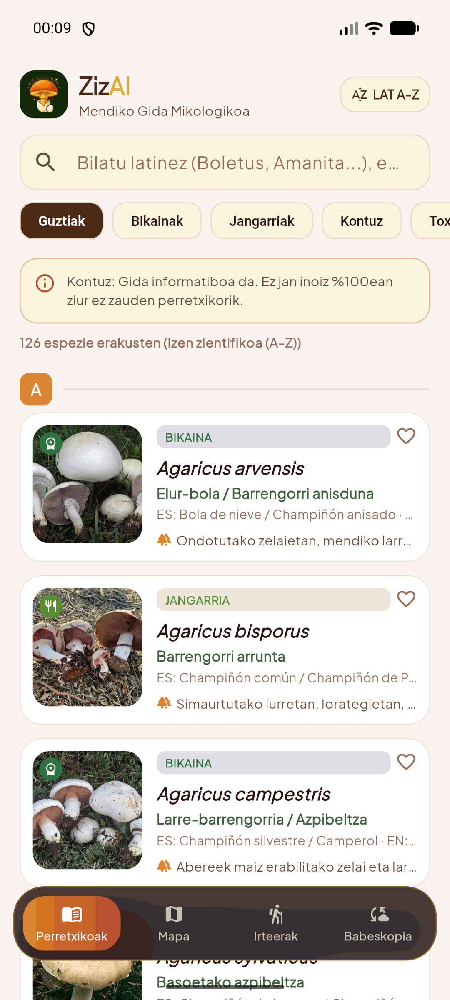
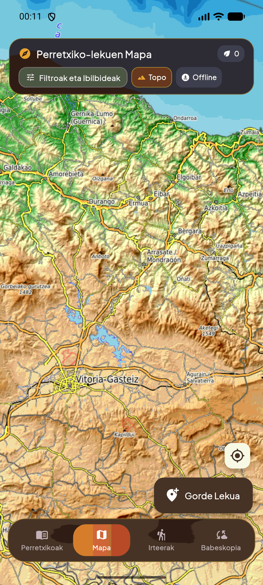
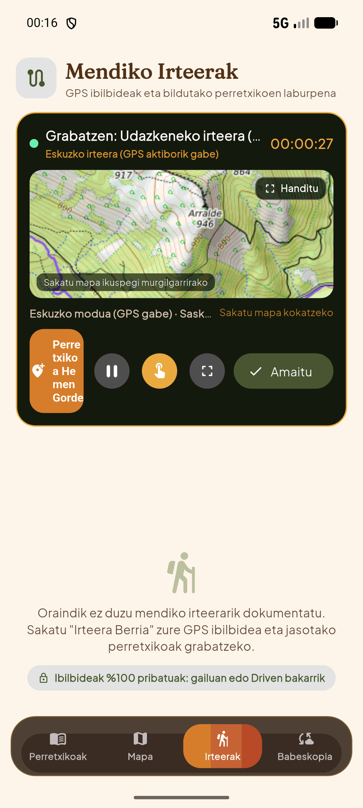
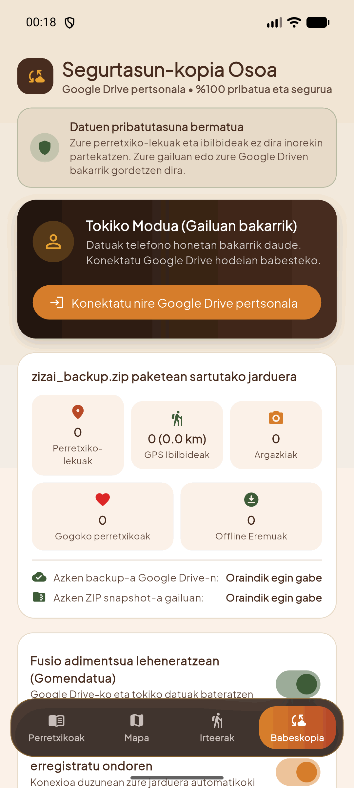

Aplikazio micológico librea, %100 offline funtzionatzen duena basoan estaldurarik gabe. Zure setalak ez dira inoiz inongo zerbitzari zentraletara bidaltzen: zure telefonoan edo zure Google Drive pribatuan bakarrik gordetzen dira.

Setazale gehienek arazo berak pairatzen dituzte: baso itxian ez dago estaldurarik, aplikazio arruntek zure datuak hodeira igotzen dituzte, eta GPSak bateria oso azkar agortzen du. ZizAI arazo horiek guztiak konpontzeko jaio da.
Basoan zaudenean estaldura galtzea ohikoa da. ZizAI-ren 126 espezieak, 221 argazki errealak, morfologia osoa eta nahasmen arriskutsuak zure telefonoan bertan daude, zerbitzarien menpe egon gabe.
Perretxikozale orok daki lekurik onenak sekretuak direla. ZizAI-k ez du zerbitzari zentralik: zure koordenatuak, ibilbideak eta argazkiak zure telefonoan edo zure Google Drive pribatuan soilik gordetzen dira.
Iragarkirik gabe, harpidetza ezkuturik gabe eta jarraipenik gabe. Zuk erabakitzen duzu zure datuekin zer egin, babeskopia ZIP formatuan deskargatuz edo Smart Merge bidez sinkronizatuz.
Merkatuko beste aplikazioekin alderatuta, ZizAI eremu menditsuko errealitaterako eta erabiltzailearen pribatutasun absoluturako diseinatuta dago.
| Ezaugarria | ZizAI (Kode Irekia) | Beste Aplikazio Batzuk |
|---|---|---|
| Pribatutasun Absolutua (Zero Zerbitzari) Koordenatu micológiak inorekin ez partekatzea | ✓ 100% Tokikoa / Google Drive pertsonala | ✕ Zerbitzari komertzialetan gordeta |
| Konexiorik Gabe (0% Estaldura) Katalogo osoa, argazkiak eta mapak mendian | ✓ 126 espezie + Offline Topo/Satelitea | ✕ Konexioa behar dute datuak kargatzeko |
| Hizkuntza Hirukoitza eta Zientifikoa Euskara, Gaztelania, Ingelesa eta Latina | ✓ A-Z ordena hizkuntzaren arabera | ✕ Itzulpen automatiko mugatuak |
| Salida Arina Bateria Aurrezteko Irteera erregistratzea GPS satelitalik gabe | ✓ Eskuzko Modua (%0 bateria xahutzea) | ✕ GPS jarraipen derrigortua |
| Kostua eta Publizitatea Kode irekia eta gardentasuna | ✓ Doakoa, iragarkirik eta mugarik gabe | ✕ Ordainpeko harpidetzak eta iragarkiak |
Ezagutu beheko nabigazio-barra zeharrargiaren 4 moduak eta bakoitzak zure mendiko jardueran duen helburua.
Mendiko gida osoa, basoan inolako estaldurarik gabe espezieak azkar kontsultatzeko, identifikatzeko eta jangarritasun-maila egiaztatzeko prestatua.

Zure aurkikuntzak mapan zehaztasun osoz kokatzea eta bistaratzea, basoko orografia eta bidezidorrak ulertuz.

Mendira egindako irteerak erregistratzea: ibilitako bidea, iraupena, kilometroak eta bildutako perretxikoen kopurua eta pisua (gramotan).

Zure datu guztien segurtasuna bermatzea. Aldatu telefonoz edo galdu gailua, zure setalak sekula ez dira galduko.
Instalatu azken bertsioa zure Android gailuan eta gozatu mendiaz segurtasun eta pribatutasun osoz.
Baldintzak: Android 7.0+ (Nougat) edo berriagoa · iOS 14.0+ (iturburu-kodetik eraikitzeko).